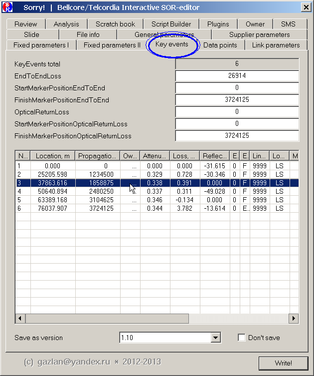
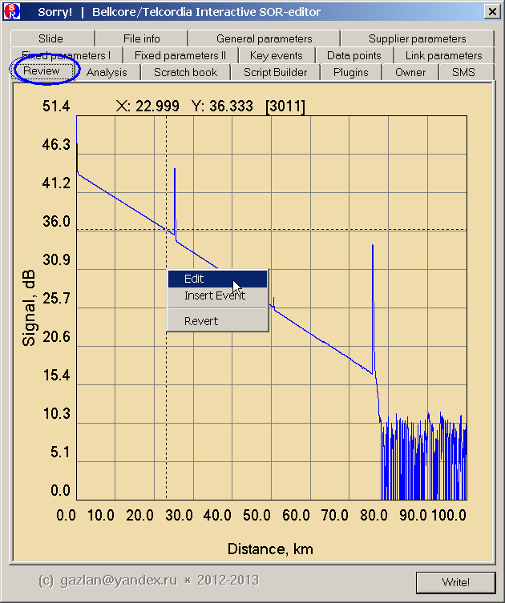
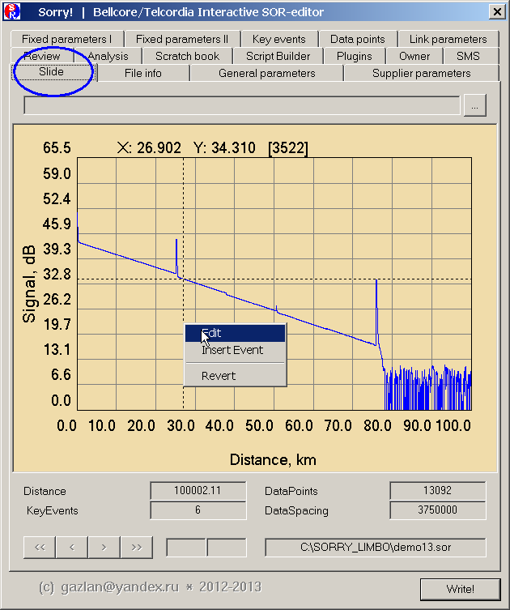
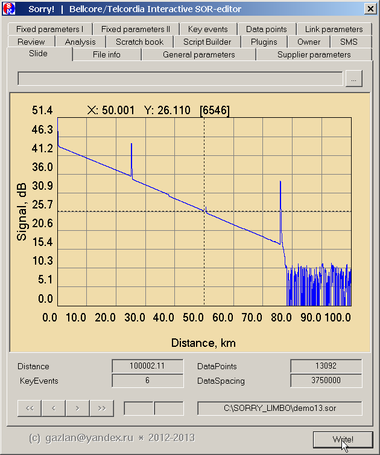
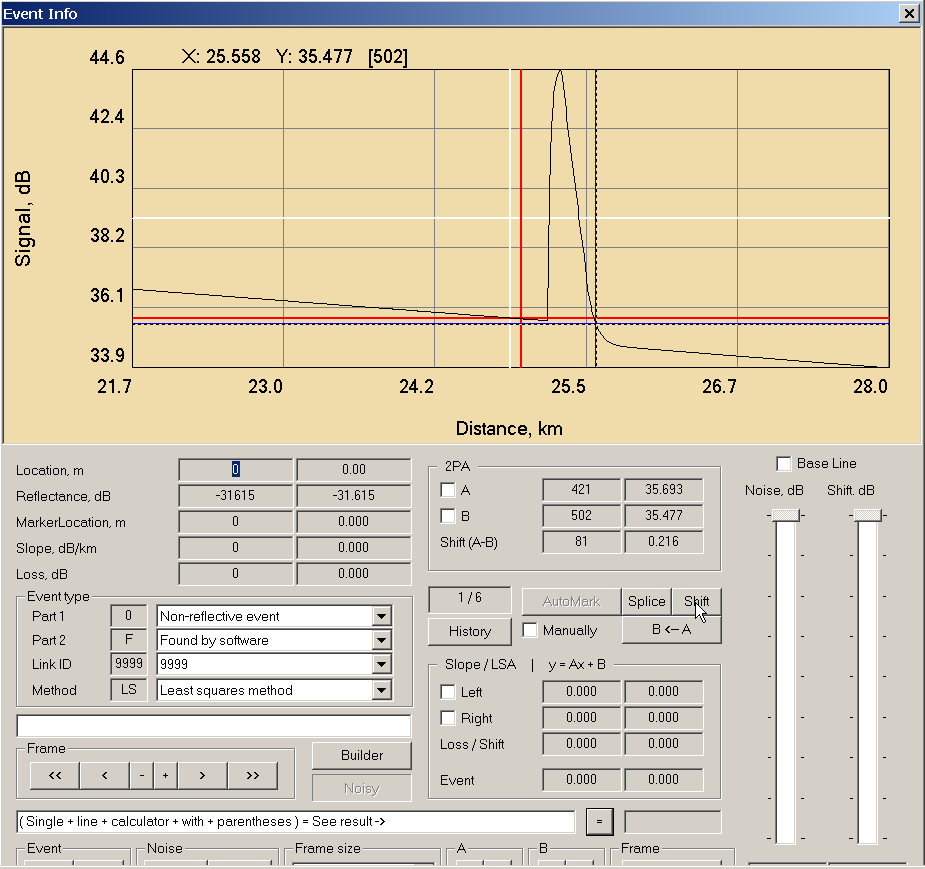
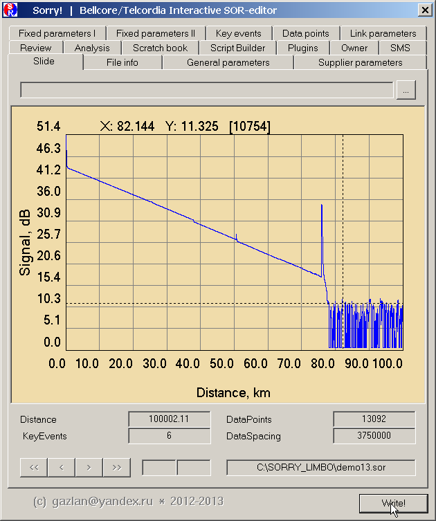
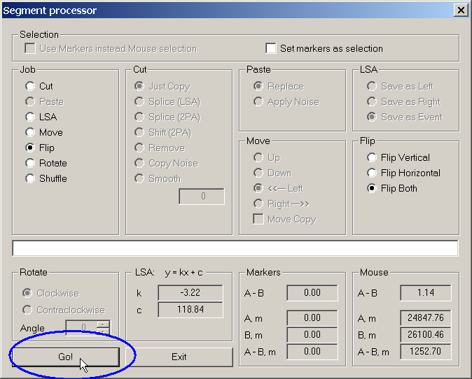

|
Прежде всего, вы должны находиться в диалоге редактирования ивента. Попасть туда можно либо из вкладки Review или Slide по правому клику мышкой (выбрать в меню Edit), либо правому/двойному клику мышкой на нужном ивенте в таблице key_events.



В открывшемся окне диалога редактирования необходимо отметить редактируемый участок трассы (сегмент).
Возможны два варианта редактирования:
- Quick Edit Mode
Установить левый маркер (A) на левый край участка трассы. Установить правый маркер (B) на правый край участка трассы. Нажать кнопку Shift. Нажать кнопку Save.
Закрыть диалог.
Нажать кнопку Write.






- Full Edit Mode
Зажав левую кнопку мыши нарисовать на трассе прямоугольник (Zoom Box).
Левая вертикальная стенка прямоугольника должна соответствовать положению левого маркера (левый край участка трассы), а правая вертикальная стенка - положению правого маркера (правый край участка трассы).

Отпустить левую кнопку мышки - появится диалог редактирования сегмента трассы (Segment Processor)

В этом диалоге нужно выбрать подходящее действие и, если, требуется, указать для него дополнительные параметры.
Например, Flip (переворот) может быть горизонтальным или вертикальным или одновременным в обоих направлениях.

Нажать кнопку Go!

Насладиться результатом

Нажать кнопку Save.
Закрыть диалог.
Нажать кнопку Write.
Убедиться, что в выходном файле сохранена отредактированная трасса

Еще раз об идеологии редактора
- Оригинальный SOR-файл открывается только на чтение и НЕ перезаписывается, если только это не будет задано явно.
- Вся работа по редактированию производится над ОБРАЗОМ SOR-файла во внутреннем формате редактора Sorry!
- Ничего НЕ сохраняется, пока не нажата кнопка Save.
- Нажатие кнопки Save сохраняет изменения ТОЛЬКО во внутреннем ОБРАЗЕ, ничего не пишется в файл, пока не нажата кнопка Write.
- Нажатие кнопки Write записывает внутренний образ в дисковый файл в формате .SOR. По умолчанию, это новый файл (с суффиксом _new).
Настоятельно рекомендуется НЕ перезаписывать оригинальные файлы, а после любого редактирования сохранять изменения в новый файл.
В силу указанных особенностей работы редактора (двухфазное редактирование), возможны незначительные различия между экранным представлением и дисковым SOR-файлом.
При визуальном редактировании, фактически, выполняется модификация только ограниченного по размеру образа в памяти (во внутреннем формате редактора Sorry!). При этом все выполняемые действия записываются как макрокоманды.
При нажатии на кнопку Write, все записанные макрокоманды "проигрываются" для полноразмерного дискового файла. Вследствие разницы размеров экранного буфера (режим симуляции) и полного файла (реальный режим), при вычислении коэффициентов сдвига а реальном режиме, возможно их незначительное отличие от тех же коэффициентов, вычисленных в режиме симуляции, что может привести к малозаметным различиям в представлении трассы в реальном режиме по отношению к режиму симуляции.
|